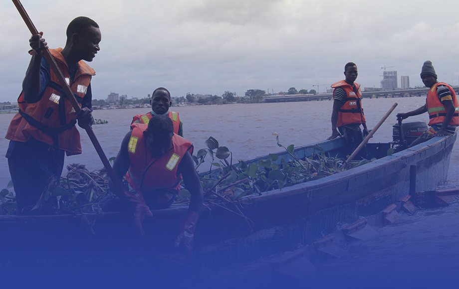

Lagune Ébrié
Nuisances olfactives : le dispositif de surveillance renforcé
Le directeur du CIAPOL a procédé à la vérification du dispositif de suivi des nuisances olfactives de la lagune Ébrié, en lien avec les stations d’épuration et les rejets industriels de la zone.
Une intervention qui mobilise le laboratoire central, la police antipollution et les équipes de gestion des sites pollués.
Lire l’article